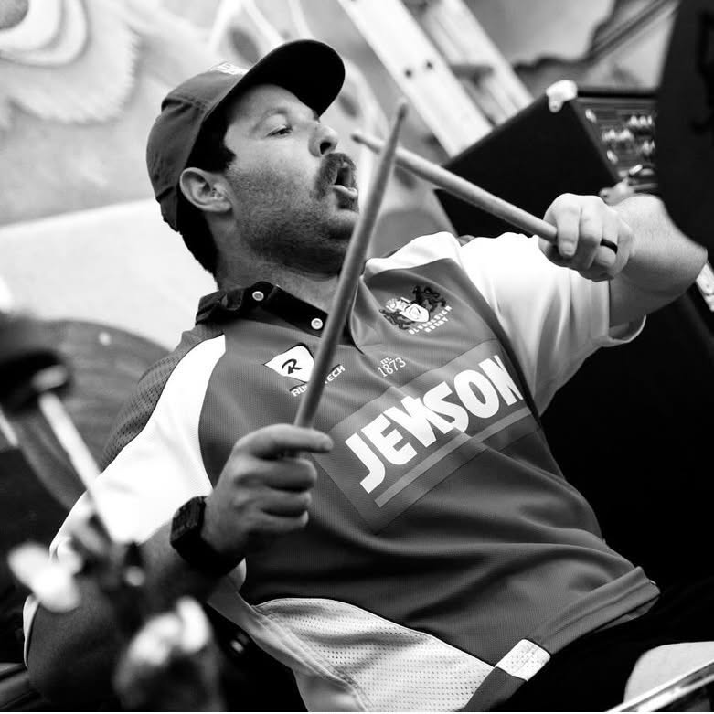
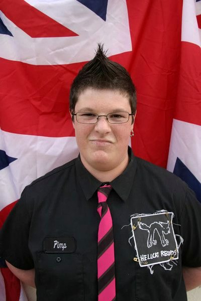

Signed to Hellcat Records at sixteen. Twelve years and four records with Orange. Still behind the kit — louder, faster, and further north.
Zak plays drums in Cockring — hardcore punk out of Sacramento, California. Four releases deep, records out on No Time Records and Human Future Records, and a live show that does not negotiate.
“We’re a hardcore punk band, kinda taking more from punk than hardcore.” — Cockring, No Echo band spotlight
In 2002, Zak and vocalist-bassist Joe Dexter started Orange in Los Angeles while still in their early teens. By sixteen they had a deal with Hellcat, and by 2004 a debut album out on it.
He drummed for the band for twelve years — through four records, a run of television placements, and most of the punk world’s touring circuit — before stepping away in 2014.

Started with Joe Dexter when both were in their early teens.
The first thing they ever put out.
Picked up by Tim Armstrong of Rancid — while the band were still teenagers.
Their debut full-length.
The second album, and the peak of the Hellcat run.
An album and an EP. “Revolution” became the theme to Cartoon Network’s Generator Rex; the band also turned up on The O.C. and The Hills.
Zak left the band after more than a decade behind the kit.